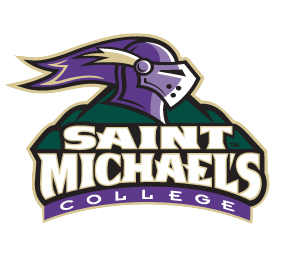

about us
The Dion Family Foundation focuses on helping individuals with tuition assistance at Catholic Institutions for grammar school, high school, and college education. The foundation also helps individuals by supporting health care institutions, particularly Massachusetts General Hospital.

St. John Neumann is a Catholic high school, based in Naples, FL, offering students a rigorous, quality, Catholic, college preparatory education. The Foundation’s work with St. John Neumann has primarily focused on developing and providing scholarships.
The third oldest general hospital in the United States and the oldest and largest hospital in New England, Mass General consistently places among the top hospitals by U.S. News & World Report. The Foundation has supported MGH’s ongoing excellence in patient care and facilities, research, teaching, and community outreach.

Saint Michael's is a selective Catholic liberal arts college of approximately 2,000 students located outside of Burlington, Vermont. The Foundation’s work with Saint Michael's over the years has included sponsoring students to study in Guyana and Cuba, with a focus on issues of poverty, illness, abandonment, and advanced age.
Saint Dominic Academy is a Maine-based Catholic pre-K through 12th grade college preparatory school, which fosters in its students strong faith, academic excellence, a sense of community and service. The Foundation’s work with St. Dom’s has primarily focused on direct scholarships to support academic opportunities.

The Home Base Program is a joint effort of the Red Sox Foundation and Massachusetts General Hospital. The program provides clinical care and support services to to Iraq and Afghanistan service members, veterans, and their families throughout New England..